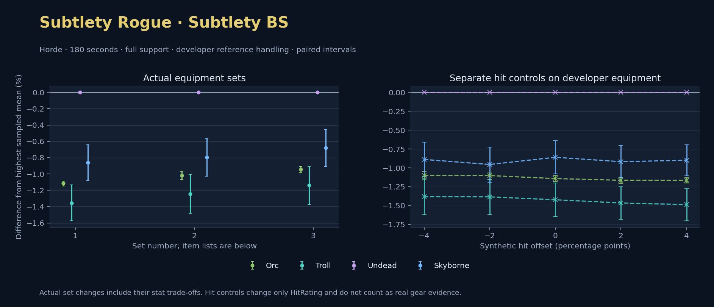

Horde · Orc / Troll / Undead / Skyborne

No pet or guardian appears in the reference combat metrics. Reference: Orc, developer equipment, 180 seconds and full support. Pet choices remain those of the developer build.
WoWSims developer · Backstab Subtlety
Unimplemented enchant or active set effects: [{"id": 1676, "pieces": 3, "effects": ["Restores 15 health per 5 sec."]}, {"id": 1676, "pieces": 5, "effects": ["When struck in combat, has a 5% chance to remove a Snare effect from yourself. Can only occur once every 60 sec."]}]
Unmeasured proc rates: [{"source": "set", "id": 1676, "pieces": 4, "kind": "ppm", "origin": "unknown"}, {"source": "item", "id": 19324, "name": "The Lobotomizer", "kind": "ppm", "origin": "vanilla"}, {"source": "enchant", "id": 1900, "name": "Enchant Weapon - Crusader", "kind": "ppm", "origin": "vanilla"}, {"source": "item", "id": 871, "name": "Flurry Axe", "kind": "ppm", "origin": "vanilla"}]
180 seconds, full support and original developer references. Hit below is generic sheet melee / spell hit; school and talent bonuses can be attached directly to spells.
| Race | DPS | Gap and interval | Generic hit | Replay |
|---|---|---|---|---|
| Undead | 652.77 | +0.000% ± 0.000 | 10.4% / 10.4% | Native input · Website JSON |
| Skyborne | 647.15 | -0.860% ± 0.218 | 10.4% / 10.4% | Native input · Website JSON |
| Orc | 645.47 | -1.117% ± 0.030 | 10.4% / 10.4% | Native input · Website JSON |
| Troll | 643.92 | -1.355% ± 0.219 | 10.4% / 10.4% | Native input · Website JSON |
| Slot | Item | ID | Enchant |
|---|---|---|---|
| Head | Darkmantle Cap | 226829 | Lesser Arcane Amalgamation |
| Neck | Beads of Ogre Might | 22150 | |
| Shoulder | Darkspear Pauldrons | 272105 | |
| Back | Earthweave Cloak | 21187 | Enchant Cloak - Agility |
| Chest | Darkmantle Tunic | 226825 | Enchant Chest - Living Stats |
| Wrist | Darkmantle Bracers | 226830 | Enchant Bracer - Agility |
| Hands | Darkmantle Grips | 226828 | Enchant Gloves - Greater Agility |
| Waist | Assassin's Waistguard | 272395 | |
| Legs | Darkmantle Pants | 226827 | Lesser Arcane Amalgamation |
| Feet | Darkmantle Footpads | 226831 | Enchant Boots - Minor Speed |
| Ring 1 | Don Julio's Band | 19325 | |
| Ring 2 | Might of Cenarius | 21189 | |
| Trinket 1 | Adaptive Combat Assistant | 272437 | |
| Trinket 2 | Rune of the Guard Captain | 19120 | |
| Main hand | The Lobotomizer | 19324 | Enchant Weapon - Crusader |
| Off hand | Flurry Axe | 871 | Enchant Weapon - Agility |
| Ranged / relic | Fahrad's Reloading Repeater | 22347 |
Published ranked alternatives · Published pre-raid
Recorded source replacements: [{"slot": "head", "from": 11735, "to": 252482, "publishedAlternativeRank": 1, "publishedEpDelta": -2.7, "reason": "First published alternative compatible with the current WoWSims database, class, faction and occupied slots."}, {"slot": "back", "from": 13340, "to": 272414, "publishedAlternativeRank": 1, "publishedEpDelta": -15.6, "reason": "First published alternative compatible with the current WoWSims database, class, faction and occupied slots."}, {"slot": "finger2", "from": 17713, "to": 285190, "publishedAlternativeRank": 2, "publishedEpDelta": -13.4, "reason": "First published alternative compatible with the current WoWSims database, class, faction and occupied slots."}, {"slot": "ranged", "from": 2100, "to": 13023, "publishedAlternativeRank": 1, "publishedEpDelta": -3.5, "reason": "First published alternative compatible with the current WoWSims database, class, faction and occupied slots."}]
Unimplemented enchant or active set effects: [{"id": 143, "pieces": 2, "effects": ["Improves your chance to hit by 2.0%."]}]
Unmeasured proc rates: [{"source": "enchant", "id": 1900, "name": "Enchant Weapon - Crusader", "kind": "ppm", "origin": "vanilla"}, {"source": "enchant", "id": 1900, "name": "Enchant Weapon - Crusader", "kind": "ppm", "origin": "vanilla"}]
180 seconds, full support and original developer references. Hit below is generic sheet melee / spell hit; school and talent bonuses can be attached directly to spells.
| Race | DPS | Gap and interval | Generic hit | Replay |
|---|---|---|---|---|
| Undead | 604.34 | +0.000% ± 0.000 | 6.2% / 6.2% | Native input · Website JSON |
| Skyborne | 599.52 | -0.797% ± 0.230 | 6.2% / 6.2% | Native input · Website JSON |
| Orc | 598.19 | -1.017% ± 0.052 | 6.2% / 6.2% | Native input · Website JSON |
| Troll | 596.82 | -1.245% ± 0.239 | 6.2% / 6.2% | Native input · Website JSON |
| Slot | Item | ID | Enchant |
|---|---|---|---|
| Head | Blue Suede Hat | 252482 | Lesser Arcane Amalgamation |
| Neck | Skibi's Pendant | 13089 | Enchant Necklace - Agility |
| Shoulder | Shadowcraft Spaulders | 16708 | |
| Back | Howler's Furs | 272414 | Enchant Cloak - Agility |
| Chest | Dawn Armor | 252483 | Enchant Chest - Greater Stats |
| Wrist | Shadowcraft Bracers | 16710 | Enchant Bracer - Agility |
| Hands | Devilsaur Gauntlets | 15063 | Enchant Gloves - Greater Agility |
| Waist | Assassin's Waistguard | 272395 | |
| Legs | Devilsaur Leggings | 15062 | Lesser Arcane Amalgamation |
| Feet | Shadowcraft Boots | 16711 | Enchant Boots - Greater Agility |
| Ring 1 | Cutthroat's Signet | 272408 | |
| Ring 2 | Wyvern Heart Band | 285190 | |
| Trinket 1 | Adaptive Combat Assistant | 272437 | |
| Trinket 2 | Rune of the Guard Captain | 19120 | |
| Main hand | Heartseeker | 12783 | Enchant Weapon - Crusader |
| Off hand | Scarlet Kris | 5267 | Enchant Weapon - Crusader |
| Ranged / relic | Eaglehorn Long Bow | 13023 |
Published one-slot hit alternative · Published pre-raid
One source-listed alternative; at least 80% of the source slot score retained. Reported hit selects the contrast; only native stats determine simulation outcomes. This is an experimental combination, not an endorsed best set.
Recorded source replacements: [{"slot": "head", "from": 11735, "to": 252482, "publishedAlternativeRank": 1, "publishedEpDelta": -2.7, "reason": "First published alternative compatible with the current WoWSims database, class, faction and occupied slots."}, {"slot": "back", "from": 13340, "to": 272414, "publishedAlternativeRank": 1, "publishedEpDelta": -15.6, "reason": "First published alternative compatible with the current WoWSims database, class, faction and occupied slots."}, {"slot": "finger2", "from": 17713, "to": 285190, "publishedAlternativeRank": 2, "publishedEpDelta": -13.4, "reason": "First published alternative compatible with the current WoWSims database, class, faction and occupied slots."}, {"slot": "ranged", "from": 2100, "to": 13023, "publishedAlternativeRank": 1, "publishedEpDelta": -3.5, "reason": "First published alternative compatible with the current WoWSims database, class, faction and occupied slots."}]
Unimplemented enchant or active set effects: [{"id": 143, "pieces": 2, "effects": ["Improves your chance to hit by 2.0%."]}]
Unmeasured proc rates: [{"source": "enchant", "id": 1900, "name": "Enchant Weapon - Crusader", "kind": "ppm", "origin": "vanilla"}, {"source": "enchant", "id": 1900, "name": "Enchant Weapon - Crusader", "kind": "ppm", "origin": "vanilla"}]
180 seconds, full support and original developer references. Hit below is generic sheet melee / spell hit; school and talent bonuses can be attached directly to spells.
| Race | DPS | Gap and interval | Generic hit | Replay |
|---|---|---|---|---|
| Undead | 599.78 | +0.000% ± 0.000 | 5.2% / 5.2% | Native input · Website JSON |
| Skyborne | 595.70 | -0.680% ± 0.224 | 5.2% / 5.2% | Native input · Website JSON |
| Orc | 594.11 | -0.945% ± 0.039 | 5.2% / 5.2% | Native input · Website JSON |
| Troll | 592.94 | -1.140% ± 0.235 | 5.2% / 5.2% | Native input · Website JSON |
| Slot | Item | ID | Enchant |
|---|---|---|---|
| Head | Blue Suede Hat | 252482 | Lesser Arcane Amalgamation |
| Neck | Skibi's Pendant | 13089 | Enchant Necklace - Agility |
| Shoulder | Shadowcraft Spaulders | 16708 | |
| Back | Shifting Cloak | 18511 | Enchant Cloak - Agility |
| Chest | Dawn Armor | 252483 | Enchant Chest - Greater Stats |
| Wrist | Shadowcraft Bracers | 16710 | Enchant Bracer - Agility |
| Hands | Devilsaur Gauntlets | 15063 | Enchant Gloves - Greater Agility |
| Waist | Assassin's Waistguard | 272395 | |
| Legs | Devilsaur Leggings | 15062 | Lesser Arcane Amalgamation |
| Feet | Shadowcraft Boots | 16711 | Enchant Boots - Greater Agility |
| Ring 1 | Cutthroat's Signet | 272408 | |
| Ring 2 | Wyvern Heart Band | 285190 | |
| Trinket 1 | Adaptive Combat Assistant | 272437 | |
| Trinket 2 | Rune of the Guard Captain | 19120 | |
| Main hand | Heartseeker | 12783 | Enchant Weapon - Crusader |
| Off hand | Scarlet Kris | 5267 | Enchant Weapon - Crusader |
| Ranged / relic | Eaglehorn Long Bow | 13023 |
The same declared pool is available to every race. Each race keeps its best validation-sample set with its screening-selected racial policy. Separate samples confirm that choice, with fresh precision samples near the practical-loss boundary. Gaps use the highest sampled mean under that same duration, support and reference treatment as their reference. A zero reference gap does not certify a race; the main matrix also allows uncertainty in the leader.
| Pool | Seconds | Support | References | Race | DPS | Gap and interval | Racial policies / mana | Selected set | Generic hit: melee / spell | Replay |
|---|---|---|---|---|---|---|---|---|---|---|
| published-pre-raid | 60 | full | developer | Undead | 677.15 | +0.000% ± 0.0005,000 iterations | developer / developer / developerMana waits 0.0s | published-rogue-subtlety-backstab-horde-9353f1e53ba8c4ef | 6.2% / 6.2% | Input · Result · Stats |
| published-pre-raid | 60 | full | developer | Troll | 674.30 | -0.420% ± 0.1545,000 iterations | developer / developer / developerMana waits 0.0s | published-rogue-subtlety-backstab-horde-9353f1e53ba8c4ef | 6.2% / 6.2% | Input · Result · Stats |
| published-pre-raid | 60 | full | developer | Orc | 673.74 | -0.503% ± 0.0235,000 iterations | developer / developer / developerMana waits 0.0s | published-rogue-subtlety-backstab-horde-9353f1e53ba8c4ef | 6.2% / 6.2% | Input · Result · Stats |
| published-pre-raid | 60 | full | developer | Skyborne | 672.43 | -0.696% ± 0.1435,000 iterations | developer / developer / developerMana waits 0.0s | published-rogue-subtlety-backstab-horde-9353f1e53ba8c4ef | 6.2% / 6.2% | Input · Result · Stats |
| published-pre-raid | 60 | full | explicit | Undead | 667.65 | +0.000% ± 0.0005,000 iterations | developer / developer / developerMana waits 0.0s | published-rogue-subtlety-backstab-horde-9353f1e53ba8c4ef | 6.2% / 6.2% | Input · Result · Stats |
| published-pre-raid | 60 | full | explicit | Troll | 664.54 | -0.466% ± 0.1555,000 iterations | developer / developer / developerMana waits 0.0s | published-rogue-subtlety-backstab-horde-9353f1e53ba8c4ef | 6.2% / 6.2% | Input · Result · Stats |
| published-pre-raid | 60 | full | explicit | Orc | 663.60 | -0.607% ± 0.0235,000 iterations | oncd / developer / developerMana waits 0.0s | published-rogue-subtlety-backstab-horde-9353f1e53ba8c4ef | 6.2% / 6.2% | Input · Result · Stats |
| published-pre-raid | 60 | full | explicit | Skyborne | 662.83 | -0.722% ± 0.1435,000 iterations | developer / developer / developerMana waits 0.0s | published-rogue-subtlety-backstab-horde-9353f1e53ba8c4ef | 6.2% / 6.2% | Input · Result · Stats |
| published-pre-raid | 60 | self | developer | Undead | 375.62 | +0.000% ± 0.0005,000 iterations | developer / developer / developerMana waits 0.0s | published-rogue-subtlety-backstab-horde-9353f1e53ba8c4ef | 6.2% / 6.2% | Input · Result · Stats |
| published-pre-raid | 60 | self | developer | Troll | 370.75 | -1.296% ± 0.1575,000 iterations | oncd / developer / developerMana waits 0.0s | published-rogue-subtlety-backstab-horde-9353f1e53ba8c4ef | 6.2% / 6.2% | Input · Result · Stats |
| published-pre-raid | 60 | self | developer | Orc | 370.12 | -1.464% ± 0.0325,000 iterations | developer / developer / developerMana waits 0.0s | published-rogue-subtlety-backstab-horde-9353f1e53ba8c4ef | 6.2% / 6.2% | Input · Result · Stats |
| published-pre-raid | 60 | self | developer | Skyborne | 369.78 | -1.553% ± 0.1385,000 iterations | developer / developer / developerMana waits 0.0s | published-rogue-subtlety-backstab-horde-9353f1e53ba8c4ef | 6.2% / 6.2% | Input · Result · Stats |
| published-pre-raid | 60 | self | explicit | Undead | 369.35 | +0.000% ± 0.0005,000 iterations | developer / developer / developerMana waits 0.0s | published-rogue-subtlety-backstab-horde-9353f1e53ba8c4ef | 6.2% / 6.2% | Input · Result · Stats |
| published-pre-raid | 60 | self | explicit | Troll | 364.36 | -1.350% ± 0.1585,000 iterations | oncd / developer / developerMana waits 0.0s | published-rogue-subtlety-backstab-horde-9353f1e53ba8c4ef | 6.2% / 6.2% | Input · Result · Stats |
| published-pre-raid | 60 | self | explicit | Skyborne | 363.46 | -1.594% ± 0.1405,000 iterations | developer / developer / developerMana waits 0.0s | published-rogue-subtlety-backstab-horde-9353f1e53ba8c4ef | 6.2% / 6.2% | Input · Result · Stats |
| published-pre-raid | 60 | self | explicit | Orc | 363.40 | -1.611% ± 0.0325,000 iterations | oncd / developer / developerMana waits 0.0s | published-rogue-subtlety-backstab-horde-9353f1e53ba8c4ef | 6.2% / 6.2% | Input · Result · Stats |
| published-pre-raid | 180 | full | developer | Undead | 604.33 | +0.000% ± 0.0005,000 iterations | developer / developer / developerMana waits 0.0s | published-rogue-subtlety-backstab-horde-9353f1e53ba8c4ef | 6.2% / 6.2% | Input · Result · Stats · Website JSON |
| published-pre-raid | 180 | full | developer | Skyborne | 599.31 | -0.830% ± 0.1035,000 iterations | developer / developer / developerMana waits 0.0s | published-rogue-subtlety-backstab-horde-9353f1e53ba8c4ef | 6.2% / 6.2% | Input · Result · Stats · Website JSON |
| published-pre-raid | 180 | full | developer | Orc | 598.11 | -1.029% ± 0.0205,000 iterations | oncd / developer / developerMana waits 0.0s | published-rogue-subtlety-backstab-horde-9353f1e53ba8c4ef | 6.2% / 6.2% | Input · Result · Stats · Website JSON |
| published-pre-raid | 180 | full | developer | Troll | 596.88 | -1.233% ± 0.1065,000 iterations | developer / developer / developerMana waits 0.0s | published-rogue-subtlety-backstab-horde-9353f1e53ba8c4ef | 6.2% / 6.2% | Input · Result · Stats · Website JSON |
| published-pre-raid | 180 | full | explicit | Undead | 598.54 | +0.000% ± 0.0005,000 iterations | developer / developer / developerMana waits 0.0s | published-rogue-subtlety-backstab-horde-9353f1e53ba8c4ef | 6.2% / 6.2% | Input · Result · Stats |
| published-pre-raid | 180 | full | explicit | Skyborne | 593.38 | -0.861% ± 0.1045,000 iterations | developer / developer / developerMana waits 0.0s | published-rogue-subtlety-backstab-horde-9353f1e53ba8c4ef | 6.2% / 6.2% | Input · Result · Stats |
| published-pre-raid | 180 | full | explicit | Orc | 592.01 | -1.090% ± 0.0245,000 iterations | oncd / developer / developerMana waits 0.0s | published-rogue-subtlety-backstab-horde-9353f1e53ba8c4ef | 6.2% / 6.2% | Input · Result · Stats |
| published-pre-raid | 180 | full | explicit | Troll | 590.87 | -1.282% ± 0.1065,000 iterations | developer / developer / developerMana waits 0.0s | published-rogue-subtlety-backstab-horde-9353f1e53ba8c4ef | 6.2% / 6.2% | Input · Result · Stats |
| published-pre-raid | 180 | self | developer | Undead | 326.21 | +0.000% ± 0.0005,000 iterations | developer / developer / developerMana waits 0.0s | published-rogue-subtlety-backstab-horde-9353f1e53ba8c4ef | 6.2% / 6.2% | Input · Result · Stats |
| published-pre-raid | 180 | self | developer | Skyborne | 320.51 | -1.748% ± 0.1015,000 iterations | developer / developer / developerMana waits 0.0s | published-rogue-subtlety-backstab-horde-9353f1e53ba8c4ef | 6.2% / 6.2% | Input · Result · Stats |
| published-pre-raid | 180 | self | developer | Orc | 319.93 | -1.924% ± 0.0245,000 iterations | developer / developer / developerMana waits 0.0s | published-rogue-subtlety-backstab-horde-9353f1e53ba8c4ef | 6.2% / 6.2% | Input · Result · Stats |
| published-pre-raid | 180 | self | developer | Troll | 319.58 | -2.033% ± 0.1045,000 iterations | developer / developer / developerMana waits 0.0s | published-rogue-subtlety-backstab-horde-9353f1e53ba8c4ef | 6.2% / 6.2% | Input · Result · Stats |
| published-pre-raid | 180 | self | explicit | Undead | 322.41 | +0.000% ± 0.0005,000 iterations | developer / developer / developerMana waits 0.0s | published-rogue-subtlety-backstab-horde-9353f1e53ba8c4ef | 6.2% / 6.2% | Input · Result · Stats |
| published-pre-raid | 180 | self | explicit | Skyborne | 316.67 | -1.779% ± 0.1025,000 iterations | developer / developer / developerMana waits 0.0s | published-rogue-subtlety-backstab-horde-9353f1e53ba8c4ef | 6.2% / 6.2% | Input · Result · Stats |
| published-pre-raid | 180 | self | explicit | Orc | 315.90 | -2.019% ± 0.0305,000 iterations | oncd / developer / developerMana waits 0.0s | published-rogue-subtlety-backstab-horde-9353f1e53ba8c4ef | 6.2% / 6.2% | Input · Result · Stats |
| published-pre-raid | 180 | self | explicit | Troll | 315.72 | -2.074% ± 0.1045,000 iterations | developer / developer / developerMana waits 0.0s | published-rogue-subtlety-backstab-horde-9353f1e53ba8c4ef | 6.2% / 6.2% | Input · Result · Stats |
| published-pre-raid | 300 | full | developer | Undead | 592.53 | +0.000% ± 0.0005,000 iterations | developer / developer / developerMana waits 0.0s | published-rogue-subtlety-backstab-horde-9353f1e53ba8c4ef | 6.2% / 6.2% | Input · Result · Stats |
| published-pre-raid | 300 | full | developer | Skyborne | 587.96 | -0.771% ± 0.0855,000 iterations | developer / developer / developerMana waits 0.0s | published-rogue-subtlety-backstab-horde-9353f1e53ba8c4ef | 6.2% / 6.2% | Input · Result · Stats |
| published-pre-raid | 300 | full | developer | Orc | 585.83 | -1.130% ± 0.0145,000 iterations | developer / developer / developerMana waits 0.0s | published-rogue-subtlety-backstab-horde-9353f1e53ba8c4ef | 6.2% / 6.2% | Input · Result · Stats |
| published-pre-raid | 300 | full | developer | Troll | 585.81 | -1.133% ± 0.0855,000 iterations | developer / developer / developerMana waits 0.0s | published-rogue-subtlety-backstab-horde-9353f1e53ba8c4ef | 6.2% / 6.2% | Input · Result · Stats |
| published-pre-raid | 300 | full | explicit | Undead | 587.49 | +0.000% ± 0.0005,000 iterations | developer / developer / developerMana waits 0.0s | published-rogue-subtlety-backstab-horde-9353f1e53ba8c4ef | 6.2% / 6.2% | Input · Result · Stats |
| published-pre-raid | 300 | full | explicit | Skyborne | 582.76 | -0.805% ± 0.0845,000 iterations | developer / developer / developerMana waits 0.0s | published-rogue-subtlety-backstab-horde-9353f1e53ba8c4ef | 6.2% / 6.2% | Input · Result · Stats |
| published-pre-raid | 300 | full | explicit | Troll | 580.57 | -1.178% ± 0.0855,000 iterations | developer / developer / developerMana waits 0.0s | published-rogue-subtlety-backstab-horde-9353f1e53ba8c4ef | 6.2% / 6.2% | Input · Result · Stats |
| published-pre-raid | 300 | full | explicit | Orc | 580.45 | -1.197% ± 0.0295,000 iterations | oncd / developer / developerMana waits 0.0s | published-rogue-subtlety-backstab-horde-9353f1e53ba8c4ef | 6.2% / 6.2% | Input · Result · Stats |
| published-pre-raid | 300 | self | developer | Undead | 319.00 | +0.000% ± 0.0005,000 iterations | developer / developer / developerMana waits 0.0s | published-rogue-subtlety-backstab-horde-9353f1e53ba8c4ef | 6.2% / 6.2% | Input · Result · Stats |
| published-pre-raid | 300 | self | developer | Skyborne | 313.62 | -1.686% ± 0.0865,000 iterations | developer / developer / developerMana waits 0.0s | published-rogue-subtlety-backstab-horde-9353f1e53ba8c4ef | 6.2% / 6.2% | Input · Result · Stats |
| published-pre-raid | 300 | self | developer | Troll | 312.65 | -1.991% ± 0.0885,000 iterations | oncd / developer / developerMana waits 0.0s | published-rogue-subtlety-backstab-horde-9353f1e53ba8c4ef | 6.2% / 6.2% | Input · Result · Stats |
| published-pre-raid | 300 | self | developer | Orc | 312.53 | -2.029% ± 0.0205,000 iterations | developer / developer / developerMana waits 0.0s | published-rogue-subtlety-backstab-horde-9353f1e53ba8c4ef | 6.2% / 6.2% | Input · Result · Stats |
| published-pre-raid | 300 | self | explicit | Undead | 315.66 | +0.000% ± 0.0005,000 iterations | developer / developer / developerMana waits 0.0s | published-rogue-subtlety-backstab-horde-9353f1e53ba8c4ef | 6.2% / 6.2% | Input · Result · Stats |
| published-pre-raid | 300 | self | explicit | Skyborne | 310.21 | -1.725% ± 0.0865,000 iterations | developer / developer / developerMana waits 0.0s | published-rogue-subtlety-backstab-horde-9353f1e53ba8c4ef | 6.2% / 6.2% | Input · Result · Stats |
| published-pre-raid | 300 | self | explicit | Troll | 309.26 | -2.027% ± 0.0885,000 iterations | oncd / developer / developerMana waits 0.0s | published-rogue-subtlety-backstab-horde-9353f1e53ba8c4ef | 6.2% / 6.2% | Input · Result · Stats |
| published-pre-raid | 300 | self | explicit | Orc | 308.98 | -2.117% ± 0.0315,000 iterations | oncd / developer / developerMana waits 0.0s | published-rogue-subtlety-backstab-horde-9353f1e53ba8c4ef | 6.2% / 6.2% | Input · Result · Stats |
| developer-reference | 60 | full | developer | Undead | 726.79 | +0.000% ± 0.0005,000 iterations | developer / developer / developerMana waits 0.0s | developer | 10.4% / 10.4% | Input · Result · Stats |
| developer-reference | 60 | full | developer | Troll | 722.66 | -0.568% ± 0.1475,000 iterations | developer / developer / developerMana waits 0.0s | developer | 10.4% / 10.4% | Input · Result · Stats |
| developer-reference | 60 | full | developer | Orc | 722.34 | -0.612% ± 0.0205,000 iterations | developer / developer / developerMana waits 0.0s | developer | 10.4% / 10.4% | Input · Result · Stats |
| developer-reference | 60 | full | developer | Skyborne | 717.90 | -1.222% ± 0.1385,000 iterations | developer / developer / developerMana waits 0.0s | developer | 10.4% / 10.4% | Input · Result · Stats |
| developer-reference | 60 | full | explicit | Undead | 716.68 | +0.000% ± 0.0005,000 iterations | developer / developer / developerMana waits 0.0s | developer | 10.4% / 10.4% | Input · Result · Stats |
| developer-reference | 60 | full | explicit | Troll | 712.27 | -0.616% ± 0.1485,000 iterations | developer / developer / developerMana waits 0.0s | developer | 10.4% / 10.4% | Input · Result · Stats |
| developer-reference | 60 | full | explicit | Orc | 711.25 | -0.758% ± 0.0205,000 iterations | oncd / developer / developerMana waits 0.0s | developer | 10.4% / 10.4% | Input · Result · Stats |
| developer-reference | 60 | full | explicit | Skyborne | 707.69 | -1.254% ± 0.1395,000 iterations | developer / developer / developerMana waits 0.0s | developer | 10.4% / 10.4% | Input · Result · Stats |
| developer-reference | 60 | self | developer | Undead | 399.97 | +0.000% ± 0.0005,000 iterations | developer / developer / developerMana waits 0.0s | developer | 10.4% / 10.4% | Input · Result · Stats |
| developer-reference | 60 | self | developer | Troll | 393.85 | -1.532% ± 0.1435,000 iterations | oncd / developer / developerMana waits 0.0s | developer | 10.4% / 10.4% | Input · Result · Stats |
| developer-reference | 60 | self | developer | Orc | 392.83 | -1.785% ± 0.0275,000 iterations | developer / developer / developerMana waits 0.0s | developer | 10.4% / 10.4% | Input · Result · Stats |
| developer-reference | 60 | self | developer | Skyborne | 391.49 | -2.122% ± 0.1295,000 iterations | developer / developer / developerMana waits 0.0s | developer | 10.4% / 10.4% | Input · Result · Stats |
| developer-reference | 60 | self | explicit | Undead | 393.35 | +0.000% ± 0.0005,000 iterations | developer / developer / developerMana waits 0.0s | developer | 10.4% / 10.4% | Input · Result · Stats |
| developer-reference | 60 | self | explicit | Troll | 387.09 | -1.592% ± 0.1445,000 iterations | oncd / developer / developerMana waits 0.0s | developer | 10.4% / 10.4% | Input · Result · Stats |
| developer-reference | 60 | self | explicit | Orc | 385.65 | -1.959% ± 0.0275,000 iterations | oncd / developer / developerMana waits 0.0s | developer | 10.4% / 10.4% | Input · Result · Stats |
| developer-reference | 60 | self | explicit | Skyborne | 384.80 | -2.174% ± 0.1305,000 iterations | developer / developer / developerMana waits 0.0s | developer | 10.4% / 10.4% | Input · Result · Stats |
| developer-reference | 180 | full | developer | Undead | 652.51 | +0.000% ± 0.0005,000 iterations | developer / developer / developerMana waits 0.0s | developer | 10.4% / 10.4% | Input · Result · Stats · Website JSON |
| developer-reference | 180 | full | developer | Skyborne | 646.98 | -0.847% ± 0.0995,000 iterations | developer / developer / developerMana waits 0.0s | developer | 10.4% / 10.4% | Input · Result · Stats · Website JSON |
| developer-reference | 180 | full | developer | Orc | 645.37 | -1.093% ± 0.0145,000 iterations | developer / developer / developerMana waits 0.0s | developer | 10.4% / 10.4% | Input · Result · Stats · Website JSON |
| developer-reference | 180 | full | developer | Troll | 644.54 | -1.221% ± 0.0985,000 iterations | developer / developer / developerMana waits 0.0s | developer | 10.4% / 10.4% | Input · Result · Stats · Website JSON |
| developer-reference | 180 | full | explicit | Undead | 646.27 | +0.000% ± 0.0005,000 iterations | developer / developer / developerMana waits 0.0s | developer | 10.4% / 10.4% | Input · Result · Stats |
| developer-reference | 180 | full | explicit | Skyborne | 640.63 | -0.874% ± 0.0995,000 iterations | developer / developer / developerMana waits 0.0s | developer | 10.4% / 10.4% | Input · Result · Stats |
| developer-reference | 180 | full | explicit | Orc | 638.61 | -1.186% ± 0.0225,000 iterations | oncd / developer / developerMana waits 0.0s | developer | 10.4% / 10.4% | Input · Result · Stats |
| developer-reference | 180 | full | explicit | Troll | 638.20 | -1.250% ± 0.0985,000 iterations | developer / developer / developerMana waits 0.0s | developer | 10.4% / 10.4% | Input · Result · Stats |
| developer-reference | 180 | self | developer | Undead | 350.00 | +0.000% ± 0.0005,000 iterations | developer / developer / developerMana waits 0.0s | developer | 10.4% / 10.4% | Input · Result · Stats |
| developer-reference | 180 | self | developer | Skyborne | 343.42 | -1.881% ± 0.0965,000 iterations | developer / developer / developerMana waits 0.0s | developer | 10.4% / 10.4% | Input · Result · Stats |
| developer-reference | 180 | self | developer | Troll | 342.31 | -2.198% ± 0.0975,000 iterations | developer / developer / developerMana waits 0.0s | developer | 10.4% / 10.4% | Input · Result · Stats |
| developer-reference | 180 | self | developer | Orc | 342.27 | -2.208% ± 0.0205,000 iterations | developer / developer / developerMana waits 0.0s | developer | 10.4% / 10.4% | Input · Result · Stats |
| developer-reference | 180 | self | explicit | Undead | 345.91 | +0.000% ± 0.0005,000 iterations | developer / developer / developerMana waits 0.0s | developer | 10.4% / 10.4% | Input · Result · Stats |
| developer-reference | 180 | self | explicit | Skyborne | 339.34 | -1.898% ± 0.0975,000 iterations | developer / developer / developerMana waits 0.0s | developer | 10.4% / 10.4% | Input · Result · Stats |
| developer-reference | 180 | self | explicit | Troll | 338.17 | -2.238% ± 0.0975,000 iterations | developer / developer / developerMana waits 0.0s | developer | 10.4% / 10.4% | Input · Result · Stats |
| developer-reference | 180 | self | explicit | Orc | 337.90 | -2.314% ± 0.0265,000 iterations | oncd / developer / developerMana waits 0.0s | developer | 10.4% / 10.4% | Input · Result · Stats |
| developer-reference | 300 | full | developer | Undead | 640.96 | +0.000% ± 0.0005,000 iterations | developer / developer / developerMana waits 0.0s | developer | 10.4% / 10.4% | Input · Result · Stats |
| developer-reference | 300 | full | developer | Skyborne | 635.54 | -0.846% ± 0.0795,000 iterations | developer / developer / developerMana waits 0.0s | developer | 10.4% / 10.4% | Input · Result · Stats |
| developer-reference | 300 | full | developer | Troll | 633.52 | -1.160% ± 0.0795,000 iterations | developer / developer / developerMana waits 0.0s | developer | 10.4% / 10.4% | Input · Result · Stats |
| developer-reference | 300 | full | developer | Orc | 633.20 | -1.210% ± 0.0125,000 iterations | developer / developer / developerMana waits 0.0s | developer | 10.4% / 10.4% | Input · Result · Stats |
| developer-reference | 300 | full | explicit | Undead | 635.43 | +0.000% ± 0.0005,000 iterations | developer / developer / developerMana waits 0.0s | developer | 10.4% / 10.4% | Input · Result · Stats |
| developer-reference | 300 | full | explicit | Skyborne | 629.97 | -0.860% ± 0.0805,000 iterations | developer / developer / developerMana waits 0.0s | developer | 10.4% / 10.4% | Input · Result · Stats |
| developer-reference | 300 | full | explicit | Troll | 627.88 | -1.189% ± 0.0795,000 iterations | developer / developer / developerMana waits 0.0s | developer | 10.4% / 10.4% | Input · Result · Stats |
| developer-reference | 300 | full | explicit | Orc | 627.24 | -1.289% ± 0.0275,000 iterations | oncd / developer / developerMana waits 0.0s | developer | 10.4% / 10.4% | Input · Result · Stats |
| developer-reference | 300 | self | developer | Undead | 342.79 | +0.000% ± 0.0005,000 iterations | developer / developer / developerMana waits 0.0s | developer | 10.4% / 10.4% | Input · Result · Stats |
| developer-reference | 300 | self | developer | Skyborne | 336.50 | -1.835% ± 0.0805,000 iterations | developer / developer / developerMana waits 0.0s | developer | 10.4% / 10.4% | Input · Result · Stats |
| developer-reference | 300 | self | developer | Troll | 335.43 | -2.147% ± 0.0825,000 iterations | oncd / developer / developerMana waits 0.0s | developer | 10.4% / 10.4% | Input · Result · Stats |
| developer-reference | 300 | self | developer | Orc | 334.80 | -2.333% ± 0.0235,000 iterations | oncd / developer / developerMana waits 0.0s | developer | 10.4% / 10.4% | Input · Result · Stats |
| developer-reference | 300 | self | explicit | Undead | 339.15 | +0.000% ± 0.0005,000 iterations | developer / developer / developerMana waits 0.0s | developer | 10.4% / 10.4% | Input · Result · Stats |
| developer-reference | 300 | self | explicit | Skyborne | 332.90 | -1.844% ± 0.0815,000 iterations | developer / developer / developerMana waits 0.0s | developer | 10.4% / 10.4% | Input · Result · Stats |
| developer-reference | 300 | self | explicit | Troll | 331.84 | -2.156% ± 0.0825,000 iterations | oncd / developer / developerMana waits 0.0s | developer | 10.4% / 10.4% | Input · Result · Stats |
| developer-reference | 300 | self | explicit | Orc | 331.03 | -2.395% ± 0.0305,000 iterations | oncd / developer / developerMana waits 0.0s | developer | 10.4% / 10.4% | Input · Result · Stats |
180 seconds, full support and the developer equipment anchor. These checks test creature sensitivity without a full gear search.
| Target | References | Race | DPS | Gap and interval | Replay |
|---|---|---|---|---|---|
| beast | developer | Troll | 674.55 | +0.000% ± 0.000 | Input · Result |
| beast | developer | Undead | 652.77 | -3.230% ± 0.220 | Input · Result |
| beast | developer | Skyborne | 647.15 | -4.062% ± 0.210 | Input · Result |
| beast | developer | Orc | 645.31 | -4.335% ± 0.220 | Input · Result |
| beast | explicit | Troll | 667.81 | +0.000% ± 0.000 | Input · Result |
| beast | explicit | Undead | 646.45 | -3.198% ± 0.220 | Input · Result |
| beast | explicit | Skyborne | 640.81 | -4.043% ± 0.210 | Input · Result |
| beast | explicit | Orc | 638.73 | -4.356% ± 0.220 | Input · Result |
| elemental | developer | Skyborne | 678.40 | +0.000% ± 0.000 | Input · Result |
| elemental | developer | Undead | 652.77 | -3.779% ± 0.212 | Input · Result |
| elemental | developer | Orc | 645.31 | -4.877% ± 0.212 | Input · Result |
| elemental | developer | Troll | 643.48 | -5.147% ± 0.208 | Input · Result |
| elemental | explicit | Skyborne | 671.74 | +0.000% ± 0.000 | Input · Result |
| elemental | explicit | Undead | 646.45 | -3.765% ± 0.214 | Input · Result |
| elemental | explicit | Orc | 638.73 | -4.915% ± 0.212 | Input · Result |
| elemental | explicit | Troll | 637.06 | -5.162% ± 0.208 | Input · Result |
Some equipment has unimplemented enchant or set effects; Some equipment uses unmeasured proc rates; Sensitive to unavailable rotation references
The APL is in constant flux due to bug fixes and new findings; if your DPS drops dramatically, reset it back to "Auto" in the Rotation tab!; Mutilate does not have a default APL currently. It will not be automatically used when talented.
These known-issue notes are source context. Runtime checks establish current cast coverage, including Mutilate. They do not prove every mechanic matches the game.